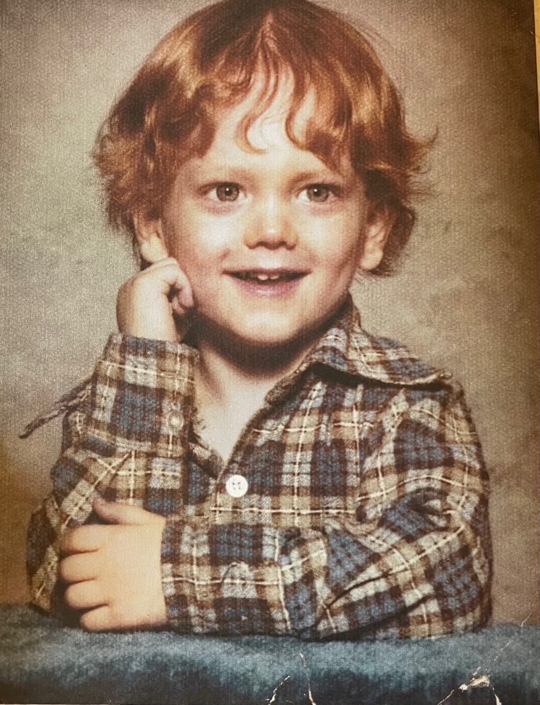

Classe 1972, Marshall Bruce Mathers III, conosciuto come “Eminem” o “Slim Shady”, è rapper, produttore discografico e attore, originario del Missouri. A scoprire il suo talento fu nel 1997 il rapper e produttore discografico Dr. Dre; due anni più tardi con il singolo My Name Is, ha ottenuto il primo successo, e il singolo “The Real Slim Shady”, del 2000, lo porta alla ribalta della musica internazionale, anche se il rapper sarà sempre al centro delle polemiche a causa della natura estremamente critica dei suoi pezzi. Nel marzo del 2022 è diventato l'artista con più singoli venduti nella storia della musica negli Stati Uniti con oltre 166 milioni di copie, risultando inoltre l'unico rapper della storia ad avere tre album certificati disco di diamante nella sua nazione.
Per quanto riguarda la sua carriera cinematografica, nel 2002, il cantante statunitense è stato protagonista del film 8 Mile, ispirato alla sua vera storia e alle difficoltà che ha dovuto affrontare prima di diventare famoso. Lose Yourself è stato il primo pezzo rap a vincere un Oscar per la migliore canzone originale come parte della colonna sonora del film, ha anche vinto due Grammy Awards: uno per la migliore canzone rap e l'altro per la migliore esibizione dal vivo.